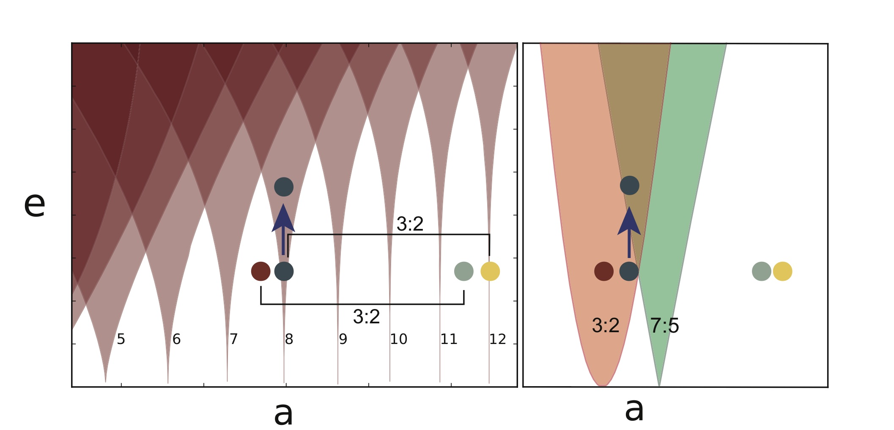

Pluto and Planets with Two Suns
The strange orbits of other worlds
Intro
After travelling for nearly a decade at the fastest speed ever recorded by a man made object, NASA's New Horizons spacecraft brought back the first pictures of the surface of Pluto and its largest moon Charon. The orbits of Pluto and Charon's four other moons are curious because Charon's large mass perturbs the orbits from well defined ellipses. Properly understanding the orbits of Pluto's moons sheds light on the formation of Pluto and other dwarf planets in the solar system, explaining the pictures from New Horizons. The analysis of these perturbed orbits for which conventional theory does not apply is also relavant to the number of recently discovered "circumbinary" planets, planets with two suns.
Generating Data
High Performance Computing
The orbits of circumbinary bodies are calculated step by step using highly optimized N-body codes in C and Fortran.
Billions of years of motion in the solar system need to be resolved on timescales of hours. The three dimensional positions and velocities of the all bodies need to be generated for each of the over 10 trillion timesteps. This results in large datasets of 1015 or a quadrillion datapoints.
{kind=link}
{kind=link}
Left: The orbits of Pluto's moons according to my simulations. Right: A picture of Pluto's moons from the Hubble Space Telescope.
Data Analysis
pandas
pandas is a powerful and flexible data analysis tool built on top of python that works particularly well for time series analysis.
The output from the N-body simulations are stored in PyTables HDF format. PyTables is designed to efficiently and easily cope with extremely large amounts of data. One important feature of PyTables is that it optimizes memory and disk resources so that data takes much less space than other solutions. PyTables enables querying subsets of data without reading the entire dataset into memory.
Orbital Elements
Orbital elements describe how moons orbit, including typical distance, inclination, and how much the orbit deviates from a circle. These orbital elements are not accurate for orbits around two large bodies, such as Pluto and Charon.
I developed new geometric orbital elements that more accurately describe the oribts around two large bodies. Using pandas to find times of closest approach using a rolling minimum and then custom interpolation to track the moons while they orbit. The figure below shows the reduction of perturbations from the second massive body for two of the six newly developed elements. These new metrics for orbits around binaries more accurately describe circumbinary orbits than the classic orbital elements.
Implications
These new orbital elements have many astrophysical applications.
Depiction of instabilities that could result in ejecting a moon from a stable orbit around Pluto and Charon.
My work has been cited in some of the first discoveries of planets that orbit two stars, papers attempting to explain the formation and evolution of Pluto and its moons, and the discovery of the solar system's first interstellar object, which might have been ejected from an orbit around two stars.
Get in touch
© Adam Sutherland. All rights reserved. Design: HTML5 UP.